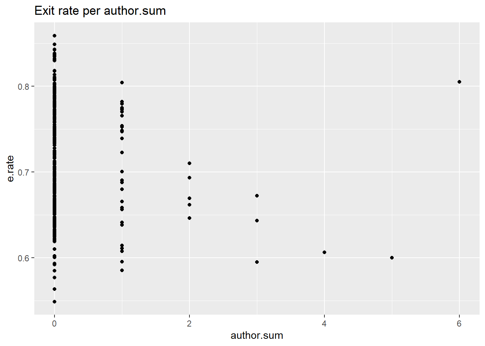

It is well known that online engagement with the web resource is a highly valuable metric and is contributing to the site revenue. This research project is exploring which factors contribute to users online engagement. To do that I will use the data of an online blog on the news website. The author of this blog is posting articles about interpersonal relationships every work day (Mon- Fri). The posts are formulated as a letter from a reader with the situation and a question about relationships. The author gives an advice about the situation. Website readers are free to comment under each post, but cannot make their own posts.
All post methadata and comments are public. They are saved by the website and available for the analysis. Using this data set, I will explore how readers’ engagement connected with blogs’s author engagement, site comments’, web source of readers and negative behaviors online.
Research Question and hypothesis.
RQ: Which factors influence user’s engagement in online blog?
DV: My dependent construct is “user’s engagement”, I will measure users’ engagement at the level of individual post, using the following metrics:
1. Exit rate or “bounces”. When the visitor is coming to the page and then leaving, i.e. not opening other pages on this website. this will represent all readers.
2. Number of comments - is engagement metric, representing only loyal readers, who have created an account and signed in.
IV: My main independent variables are
Post popularity. Unique users - number of unique people viewed the post.
Source of the readers - which web page the reader came from. This is represented by 6 different variables, each is continuous type.
Mood of the conversation , derivative continuous variable calculated as the ratio of “likes†to all emotions (sum of thumbs up and thumbs down), with the range 0-1.
Blocked and flagged comments.
Number of author’s comments.
Weekday of the post.
Attaching package: 'dplyr'
The following objects are masked from 'package:stats':
filter, lag
The following objects are masked from 'package:base':
intersect, setdiff, setequal, union
── Attaching packages ─────────────────────────────────────── tidyverse 1.3.2 ──
✔ tibble 3.1.8 ✔ purrr 1.0.1
✔ tidyr 1.3.0 ✔ stringr 1.5.0
✔ readr 2.1.4 ✔ forcats 1.0.0
── Conflicts ────────────────────────────────────────── tidyverse_conflicts() ──
✖ dplyr::filter() masks stats::filter()
✖ dplyr::lag() masks stats::lag()
Attaching package: 'gridExtra'
The following object is masked from 'package:dplyr':
combine
Please cite as:
Hlavac, Marek (2022). stargazer: Well-Formatted Regression and Summary Statistics Tables.
R package version 5.2.3. https://CRAN.R-project.org/package=stargazer
Attaching package: 'lubridate'
The following objects are masked from 'package:base':
date, intersect, setdiff, union
Data source and description.
To answer my research question I will use two datasets. The first data set has information about all comments associated with each post by post ID. The second data set is analytics data for the web page. It contains one post per row and variables describe each post as a whole without breaking down to the comment level.
In this project I will analyze posts for January 2022 - March 2023. Here is the list of variables in each data set:
Comments data:
Code
getwd()
[1] "C:/Users/Diana/OneDrive - University Of Massachusetts Medical School/Documents/R/R working directory/DACSS/603/603_Spring_2023/posts"
Code
# First, I will load the data set with the comment level data:raw <-as_tibble (read_csv("C:\\Users\\Diana\\OneDrive - University Of Massachusetts Medical School\\Documents\\R\\R working directory\\DACSS\\603\\my study files for dacss603\\globe\\ data.2021.plus.csv"))
Rows: 105136 Columns: 17
── Column specification ────────────────────────────────────────────────────────
Delimiter: ","
chr (6): content, user_name, display_name, image_url, email, approved
dbl (7): message_id, post_id, user_id, parent, absolute_likes, absolute_dis...
lgl (3): email_verified, created_at, private_profile
dttm (1): written_at
ℹ Use `spec()` to retrieve the full column specification for this data.
ℹ Specify the column types or set `show_col_types = FALSE` to quiet this message.
# Second, loadng post-level data :merged <-as_tibble (read_csv("C:\\Users\\Diana\\OneDrive - University Of Massachusetts Medical School\\Documents\\R\\R working directory\\DACSS\\603\\my study files for dacss603\\globe\\data.merged.csv"))
Rows: 535 Columns: 23
── Column specification ────────────────────────────────────────────────────────
Delimiter: ","
chr (3): Letter, Exit rate, post.month
dbl (18): Page views, Search + amp referral visits, Direct (non-email) refe...
num (1): Visits when post was on LL HP
date (1): post.date
ℹ Use `spec()` to retrieve the full column specification for this data.
ℹ Specify the column types or set `show_col_types = FALSE` to quiet this message.
Code
# colnames(merged)str(merged)
tibble [535 × 23] (S3: tbl_df/tbl/data.frame)
$ post.date : Date[1:535], format: "2021-01-04" "2021-01-05" ...
$ Letter : chr [1:535] "love letters | blog | I don&'t want him to let me go" "love letters | blog | Should I be working to get her back?" "love letters | blog | I&'m sick of thinking about the breakup" "love letters | blog | I don&'t want to be selfish about 2020 Christmas" ...
$ Page views : num [1:535] 14830 12067 11921 12817 12866 ...
$ Search + amp referral visits : num [1:535] 1005 822 793 765 934 ...
$ Direct (non-email) referral visits: num [1:535] 10005 7948 7997 8746 8400 ...
$ Visits : num [1:535] 12998 10391 10331 11040 10818 ...
$ Uniques : num [1:535] 11453 8985 8917 9662 8564 ...
$ Other website referral visits : num [1:535] 129 232 106 152 139 153 165 157 85 151 ...
$ Social referral visits : num [1:535] 457 94 156 106 113 368 90 171 84 129 ...
$ BDC referral visits : num [1:535] 7087 5312 5185 5901 4570 ...
$ Visits when post was on LL HP : num [1:535] 3167 3323 2929 3056 4795 ...
$ Exits : num [1:535] 9679 7549 7613 8188 7900 ...
$ Exit rate : chr [1:535] "74%" "73%" "74%" "74%" ...
$ dup : num [1:535] 0 0 0 0 0 0 0 0 0 0 ...
$ post_id : num [1:535] 27071003 27070997 27070991 27070985 27070979 ...
$ n.comments : num [1:535] 267 207 266 372 319 267 337 154 179 375 ...
$ post.year : num [1:535] 2021 2021 2021 2021 2021 ...
$ post.month : chr [1:535] "01" "01" "01" "01" ...
$ post.likes : num [1:535] 1440 864 936 1497 1145 ...
$ post.dislikes : num [1:535] 72 106 96 520 154 188 150 62 106 150 ...
$ post.total.likes : num [1:535] 1512 970 1032 2017 1299 ...
$ blocked.sum : num [1:535] 1 2 3 9 2 3 4 0 3 3 ...
$ pct.positive : num [1:535] 95.2 89.1 90.7 74.2 88.1 ...
Code
dim(merged)
[1] 535 23
Code
# Limiting the dataset to 2022: merged <- merged%>%filter(post.date >="2022-01-01")dim(merged)
[1] 287 23
Code
# Due to dataset of comments having more data than post dataset, I will cut them to match: merged <- merged %>%filter (!is.na(merged$pct.positive))
To begin, I will review available variables and evaluate to identify a metric for each construct in my study.
1.DV: engagement.
Exit rate
This variable is measuring how many people visited the page and then left the website after the first view. This metric is the best measure of engagement for all users, as it represents the first step after being exposed to the post - either quitting the site or remaining on the site.
# creating year_month variable merged$post.month <-as.numeric(merged$post.month)merged$year_month <-paste0(merged$post.year, "-", sprintf("%02d", merged$post.month))ggplot(merged, mapping =aes(x=year_month , y=`e.rate`, fill=year_month ))+geom_boxplot() +labs(title ="distribution of `Exit rate` per post ", y ="Exit rate" , x="Month")+theme(axis.text.x =element_text(angle =45, hjust =1))
Number of comments:
engagement metric for loyal readers.
Commenting requires user to log in, which is an indicator of greater engagement of an individual user. Therefore this variable represents engagement of a subset of users,loyal readers, who have created an account.
Code
# merged$year_month ggplot(data=merged, mapping=aes(x=n.comments))+geom_histogram(fill ="seagreen4")+labs(title="Number of comments histogram")
`stat_bin()` using `bins = 30`. Pick better value with `binwidth`.
And change in the distribution over time:
Code
ggplot(merged, mapping =aes(x=year_month , y=n.comments, fill=year_month ))+geom_boxplot() +labs(title ="distribution of comments per post ", y ="Number of comments" )+scale_y_continuous(breaks =seq (from=0, to=10000, by=100)) +theme(axis.text.x =element_text(angle =45, hjust =1))
2.IV. Independent variables:
2.1.Popularity
“Uniques†variable represents number of unique people who came to the page and viewed it at least once, his metric represents popularity of the post. It has Poisson distribution:
We can see that popularity strongly correlated with exit rate, where an increase in popularity causes decrease of engagement. It is not as strongly correlated with number of comments. Engagement rate and number of comments don’t show obvious pattern between each other.
2.2. Referral sources.
The website analytics provides information on where the viewers are coming from to the blog page. For example, if people clicked on the blog link posted on FaceBook, that would be referral from social media. If people clicked on the blog link within BDC website, that would be “BDC referral visit”.
There are 5 sources of referrals, each corresponding with a variable in the data set. Variable’s value is a number of visits from this referral source.
"Search + amp referral visits"
"Direct (non-email) referral visits"
"Other website referral visits"
"Social referral visits"
"BDC referral visits"
"Visits when post was on LL HP"
Code
#renaming variables for convenience: merged<-merged%>%rename(google ="Search + amp referral visits",direct ="Direct (non-email) referral visits",other.web ="Other website referral visits",social="Social referral visits",bdc="BDC referral visits",ll="Visits when post was on LL HP" )ggplot(merged, mapping=aes(x=post.date))+geom_point(aes(y=google), color="red")+geom_point(aes(y=direct), color="green")+geom_point(aes(y=other.web), color="yellow")+geom_point(aes(y=social), color="purple")+geom_point(aes(y=bdc), color="blue")+geom_point(aes(y=ll), color="pink") +labs(title ="Referral sources per post ", y ="Number of referrals" , x="Post")+scale_color_manual(values =c("red", "green", "yellow", "purple", "blue", "pink"),labels =c("Google", "Direct", "Other Web", "Social", "Bdc", "LL"))
This graph is showing of “Search + amp referral visits†have high variability. Other referral sources range is much smaller.
# colnames(comments.data)# merged <- merge( merged, post.date , by = "post_id", all = TRUE)merged <-merged %>%mutate (weekday =wday(post.date, label =TRUE))table(merged$weekday)
Sun Mon Tue Wed Thu Fri Sat
0 49 61 60 59 58 0
The posts are being published Monday through Friday (with rare exceptions). No posts are published on the weekend. Below is a plot for exit rate and number of comments’ distributions per week day
Code
ggplot (merged, mapping=aes(x=weekday, y=e.rate) )+geom_boxplot()+geom_point()+labs(title="Exit rate per weekday")
Code
ggplot (merged, mapping=aes(x=weekday, y=n.comments) )+geom_boxplot()+geom_point()+labs(title="Number of comments per weekday")
We can see that exit rate is overall lower on Tuesday, and number of comments overall highest on Fridays.
2.4. Authors comments
To identify, how much the author of the blog is engaged in the post, I will create an additional variable derived from a user_name field and review the distribution of autor’s comments :
Code
# str(merged)comments.data$user_name<-ifelse (is.na(comments.data$user_name), 0, comments.data$user_name)comments.data$author<-ifelse (comments.data$user_name=="MeredithGoldstein", 1, 0)comments.grouped <-comments.data %>%group_by(post_id)%>%summarize(n.comments=n(),author.sum =sum(author))# Comments data contains rows that dont actually reporesent posts, and were crearted by web support team for troubleshooting. I need to remove these rows. They typically have very low number of commentscomments.grouped <-comments.grouped %>%filter(n.comments >100) # removing invalid posts created by the website management team.comments.grouped <-comments.grouped %>%select(post_id, author.sum)dim(comments.grouped)
[1] 287 2
Code
#adding author.sum to main data set: merged <-merge( merged , comments.grouped, by ="post_id", all =TRUE)ggplot (merged, mapping=aes(x=author.sum) )+geom_histogram()+labs(title="Authors comments distribution")
`stat_bin()` using `bins = 30`. Pick better value with `binwidth`.
Authors comments per engagement metrics:
Code
ggplot (merged, mapping=aes(x=author.sum, y=e.rate ))+geom_point()+labs(title="Exit rate per author.sum")

Code
ggplot (merged, mapping=aes(x=author.sum, y=n.comments) )+geom_point()+labs(title="Number of comments per author.sum")
This graph shows, that majority of posts have no author’s comments.
2.5. Mood of the post.
This is a numerical variable, calculated as percentage of “thumbs up†from all likes (both “thumbs up†and “thumbs down”).
Code
# colnames(merged)ggplot (merged, mapping=aes(x=pct.positive) )+geom_histogram(fill ="springgreen3")+labs(title="Mood of the post (pct.positive) distribution")
`stat_bin()` using `bins = 30`. Pick better value with `binwidth`.
Plotting mood pf the post against engagement metrics:
Code
ggplot (merged, mapping=aes(x=pct.positive, y=e.rate ))+geom_point()+labs(title="Exit rate per pct.positive")
Code
ggplot (merged, mapping=aes(x=pct.positive, y=n.comments) )+geom_point()+labs(title="Number of comments per pct.positive")
Distribution of mood over time:
Code
ggplot(merged, mapping =aes(x=year_month , y=pct.positive, fill=year_month ))+geom_boxplot() +labs(title ="distribution of Mood per post ", y ="Mood" , x="Month")+theme(axis.text.x =element_text(angle =45, hjust =1))
2.6. Blocked comments per post.
Now I will visualize amount of blocked comments per post. It also has Poisson distribution.
Elimination of non-significant factors slightly impacted coefficients of significant variables, and did not change R^2 or adjusted R^2 much.
My next step is to diagnose this model:
3.2. Diagnostic of linear models:
Code
model.3<-lm(e.rate ~log(Uniques)+ google +direct +other.web +social +bdc +weekday , data = merged)plot(model.3, which =1:6)
We can see the issue with distribution of residuals in “Residuals vs fitted†plot. This suggests non-linear relationship between variables.
I will transform some referral variables to see if that gives me a better model:
Code
#original modelmodel.3<-lm(e.rate ~log(Uniques)+ google +direct +other.web +social +bdc +weekday , data = merged)# Logging Google referralsmodel.4<-lm(e.rate ~log(Uniques)+log(google) +direct +other.web +social +bdc +weekday , data = merged)stargazer( model.3, model.4, model.5, type ='text')
Error in .stargazer.wrap(..., type = type, title = title, style = style, : object 'model.5' not found
This table showing better fit when google variable is logged. Uniques’ coefficient also changed significantly as I am modified google variable. That might indicate interaction between them, which I will explore later in this paper.
Now, I will log the rest of referral variables.
Code
model.4<-lm(e.rate ~log(Uniques)+log(google) +direct +other.web +social +bdc +weekday , data = merged)model.5<-lm(e.rate ~log(Uniques)+log(google) +log(direct) +log(other.web) +log(social) +log(bdc) +weekday , data = merged)model.6<-lm(e.rate ~log(Uniques)+log(google) +log(direct) +other.web +social +log(bdc) +weekday , data = merged)stargazer( model.4,model.5,model.6, type ='text')
Adding interaction between popularity and google referrals significantly improved the model: interaction term has negative correlation with dependent variable, it also made “social†referrals significant, and improved models R^2 and adjusted R^2.
It also significantly changed distribution of residuals: now distribution is equally spread around 0.
Code
par(mfrow =c(1,2))plot(model.7, which =1)plot(model.8, which =1)
Lets review other diagnostic plots:
Code
par(mfrow =c(1,2))plot(model.7, which =2)plot(model.8, which =2)
Code
par(mfrow =c(1,2))plot(model.7, which =3)plot(model.8, which =3)
Code
par(mfrow =c(2,2))plot(model.7, which =4)plot(model.8, which =4)par(mfrow =c(2,2))
Code
plot(model.7, which =5)plot(model.8, which =5)par(mfrow =c(2,2))
Code
plot(model.7, which =6)plot(model.8, which =6)
We can see from both models, that variable 231 is an outlier that significantly impacts the model. I will remove that observation and re-evaluate the model:
Code
merged.old <- mergeddim(merged)
[1] 287 27
Code
dim(merged.old)
[1] 287 27
Code
merged <- merged[-c(235), ]model.8<-lm(e.rate ~log(Uniques)*log(google) +log(direct) +other.web +social +log(bdc) +weekday , data = merged.old)model.9<-lm(e.rate ~log(Uniques)*log(google) +log(direct) +other.web +social +log(bdc) +weekday , data = merged)stargazer( model.8,model.9, type ='text')
par(mfrow =c(1,3))plot(model.9, which =1)plot(model.10, which =1)
We can see model 9 ( with interaction between google and Uniques) shows better residuals vs fitted plot.
Code
par(mfrow =c(1,3))plot(model.9, which =2)plot(model.10, which =2)par(mfrow =c(1,3))
Code
plot(model.9, which =3)plot(model.10, which =3)par(mfrow =c(1,3))
Code
plot(model.9, which =4)plot(model.10, which =4)par(mfrow =c(1,3))
Code
plot(model.9, which =5)plot(model.10, which =5)plot(model.11, which =5)
Error in plot(model.11, which = 5): object 'model.11' not found
Code
par(mfrow =c(1,3))
Code
plot(model.9, which =6)plot(model.10, which =6)
Both models have similar R^2 and adjusted R^2.
Calculation of AIC and BIC:
Code
AIC(model.9)
[1] -1425.685
Code
AIC(model.10)
[1] -1391.349
Code
BIC(model.9)
[1] -1378.158
Code
BIC(model.10)
[1] -1343.821
AIC and BIC are very close.
To summarize, models # 9 and 10 demonstrated a good fit with high R^2 value and good results in diagnostic plots. Each of them is visualizing interaction between popularity and referral variable.
3.4. Visualizing interaction:
Moderating impact of referral source on relationship between popularity and engagement:
This graph shows that for higher levels of Google impact of popularity on exit rate will be lower (i.e. better engagement for the same level of popularity) .
Moderating impact of direct referrals on relationship between popularity and engagement:
Code
interact_plot(model.9, pred = Uniques, modx = direct, plot.points =TRUE )
Using data merged from global environment. This could cause incorrect
results if merged has been altered since the model was fit. You can
manually provide the data to the "data =" argument.
Popularity generally decreases engagement. However, with higher levels of direct , impact of popularity on exit rate will be lower.
4. Model for N.comments - loyal readers engagement:
4.1. Basic model for n.comments
Now as I have created a model for exit rate, I will do the same for n.comments as dependent variable, which represents the measurement of engagement of loyal readers.
We can see that removing #48 changed some coefficients, did not impact significance of variables. It also improved R^2 and adjusted R^2.
Code
par(mfrow =c(2,3))plot(model.4, which =1:6)
In the first and third plot we can see values being concentrated unevenly, which suggests hetersroscedasticity of the variables.
4. Conlusion
We have build tree models for different engagement metrics: engagement of all readers (model 9 and 10) and engagement of loyal readers (model 4) . As we can see from the models, different factors contribute to engagement of these two groups of readers:
Code
stargazer(model.9, model.10, model.4, type ='text')
We can see, that different referral sources contribute to users engagement. While all readers’engagement (measured with exit rate) is influenced by interaction of referrals from Google and Direct and popularity, internal bdc referrals and somewhat referrals from other web sources, loyal readers’ engagement is highly impacted by the mood of the post, internal page referrals, social referrals. They also show some direct referrals’ impact, but very small in compare with its influence on all users’ engagement.
We also see significant contribution of day of the week on readers engagement. Specifically, Monday’s engagement of all readers is significantly lower than any other day. For loyal readers, Wednesday showing thee lowest engagement.
It also important to point out, that popularity of the post (Uniques) only plays a role for all user’s engagement. Loyal readers appear not being impacted by popularity. Impact of popularity (Uniques) is moderated by Google and Direct referrals, where the posts with higher amounts of referrals show overall better engagement.
To conclude, we found significant connection between the referral source and readers engagement. Most metrics related to the post discussion appeared non-relvent, with the exception of post mood positively impacting loyal readers engagement.
Limitations:
The role of Google referrals needs to be explored further, to identify how posts with high level of Google referrals contibute to this model. Also, finding out a cause of some pots having high Google referral rate would be beneficial for the blog development.
Source Code
---title: "Final Project checkin 5"author: "Diana Rinker"description: "Final project DACSS 603"date: "5/9/2023"format: html: toc: true code-fold: true code-copy: true code-tools: trueeditor: markdown: wrap: 72editor_options: chunk_output_type: console---## DACSS 603, spring 2023## Final Project check-in 5, Diana Rinker.# Introduction. Online engagementIt is well known that online engagement with the web resource is ahighly valuable metric and is contributing to the site revenue. Thisresearch project is exploring which factors contribute to users onlineengagement. To do that I will use the data of an online blog on the newswebsite. The author of this blog is posting articles about interpersonalrelationships every work day (Mon- Fri). The posts are formulated as aletter from a reader with the situation and a question aboutrelationships. The author gives an advice about the situation. Websitereaders are free to comment under each post, but cannot make their ownposts.All post methadata and comments are public. They are saved by thewebsite and available for the analysis. Using this data set, I willexplore how readers' engagement connected with blogs's authorengagement, site comments', web source of readers and negative behaviorsonline.# Research Question and hypothesis.**RQ:** Which factors influence user's engagement in online blog?**DV:** My dependent construct is **"user's engagement**", I willmeasure users' engagement at the level of individual post, using thefollowing metrics:1\. Exit rate or "bounces". When the visitor is coming to the page andthen leaving, i.e. not opening other pages on this website. this willrepresent all readers.2\. Number of comments - is engagement metric, representing only loyalreaders, who have created an account and signed in.**IV:** My main independent variables are1. Post popularity. Unique users - number of unique people viewed the post.2. Source of the readers - which web page the reader came from. This is represented by 6 different variables, each is continuous type.3. Mood of the conversation , derivative continuous variable calculated as the ratio of "likes" to all emotions (sum of thumbs up and thumbs down), with the range 0-1.4. Blocked and flagged comments.5. Number of author's comments.6. Weekday of the post.```{r, echo=F}#Loading necessary libraries: library(readxl)library(dplyr)library(ggplot2)library(tidyverse)library(png)library(grid)library(gridExtra)library(stargazer)library(jtools)library(interactions)library(lubridate)```### Data source and description.To answer my research question I will use two datasets. The first dataset has information about all comments associated with each post by postID. The second data set is analytics data for the web page. It containsone post per row and variables describe each post as a whole withoutbreaking down to the comment level.In this project I will analyze posts for January 2022 - March 2023. Hereis the list of variables in each data set:Comments data:```{r, echo=T}getwd()# First, I will load the data set with the comment level data:raw <-as_tibble (read_csv("C:\\Users\\Diana\\OneDrive - University Of Massachusetts Medical School\\Documents\\R\\R working directory\\DACSS\\603\\my study files for dacss603\\globe\\ data.2021.plus.csv"))comments.data<-raw colnames (comments.data)head(comments.data$written_at)comments.data <-comments.data%>%mutate(com.year =format(written_at,format ="%Y" ))# range(comments.data$com.year)# dim(comments.data)str(comments.data)dim(comments.data)comments.data <- comments.data%>%filter(written_at >="2022-01-01")```Post data:```{r, echo=T}# Second, loadng post-level data :merged <-as_tibble (read_csv("C:\\Users\\Diana\\OneDrive - University Of Massachusetts Medical School\\Documents\\R\\R working directory\\DACSS\\603\\my study files for dacss603\\globe\\data.merged.csv"))# colnames(merged)str(merged)dim(merged)# Limiting the dataset to 2022: merged <- merged%>%filter(post.date >="2022-01-01")dim(merged)# Due to dataset of comments having more data than post dataset, I will cut them to match: merged <- merged %>%filter (!is.na(merged$pct.positive))```To begin, I will review available variables and evaluate to identify ametric for each construct in my study.# 1.DV: engagement.## Exit rateThis variable is measuring how many people visited the page and thenleft the website after the first view. This metric is the best measureof engagement for all users, as it represents the first step after beingexposed to the post - either quitting the site or remaining on the site.Here can see the distribution of this variable :```{r, echo=T}# str(merged)merged <- merged %>%mutate(e.rate = Exits/`Page views`)select (merged, `Exit rate`, e.rate)# merged$`Exit rate` <- as.numeric(sub("%", "", merged$`Exit rate`)) / 100ggplot(data=merged, mapping=aes(x=e.rate))+geom_histogram(binwidth =0.01, fill ="sandybrown", alpha =0.7)+labs(title="Exit rate histogram")```Distribution of exit rate over time:```{r, echo=T}# creating year_month variable merged$post.month <-as.numeric(merged$post.month)merged$year_month <-paste0(merged$post.year, "-", sprintf("%02d", merged$post.month))ggplot(merged, mapping =aes(x=year_month , y=`e.rate`, fill=year_month ))+geom_boxplot() +labs(title ="distribution of `Exit rate` per post ", y ="Exit rate" , x="Month")+theme(axis.text.x =element_text(angle =45, hjust =1))```## Number of comments:engagement metric for loyal readers.Commenting requires user to log in, which is an indicator of greaterengagement of an individual user. Therefore this variable representsengagement of a subset of users,loyal readers, who have created anaccount.```{r, echo=T}# merged$year_month ggplot(data=merged, mapping=aes(x=n.comments))+geom_histogram(fill ="seagreen4")+labs(title="Number of comments histogram")```And change in the distribution over time:```{r, echo=T}ggplot(merged, mapping =aes(x=year_month , y=n.comments, fill=year_month ))+geom_boxplot() +labs(title ="distribution of comments per post ", y ="Number of comments" )+scale_y_continuous(breaks =seq (from=0, to=10000, by=100)) +theme(axis.text.x =element_text(angle =45, hjust =1))```# 2.IV. Independent variables:### 2.1.Popularity"Uniques" variable represents number of unique people who came to thepage and viewed it at least once, his metric represents popularity ofthe post. It has Poisson distribution:```{r, echo=T}# colnames(merged)ggplot(data=merged, mapping=aes(x=Uniques))+geom_histogram(fill ="purple2")```We can see a long tail on the right, showing that there is a number ofposts who are way more popular than the majority of the sample.Distribution of popularity over time also showing significant variance: ```{r, echo=T}ggplot( data=merged, mapping=aes(y=Uniques, x=merged$year_month))+geom_boxplot()+labs(title="Number of unique viewers per month", x="Month", y="Number of unique viewers")+theme(axis.text.x =element_text(angle =45, hjust =1))```Next plot is illustrating connection between popularity and engagementmetrics:```{r, echo=T}pairs(subset (merged, select=c(Uniques, e.rate, n.comments )))```We can see that popularity strongly correlated with exit rate, where anincrease in popularity causes decrease of engagement.It is not as strongly correlated with number of comments. Engagement rate and numberof comments don't show obvious pattern between each other.### 2.2. Referral sources.The website analytics provides information on where the viewers arecoming from to the blog page. For example, if people clicked on the bloglink posted on FaceBook, that would be referral from social media. Ifpeople clicked on the blog link within BDC website, that would be "BDCreferral visit".There are 5 sources of referrals, each corresponding with a variable inthe data set. Variable's value is a number of visits from this referralsource.``` "Search + amp referral visits""Direct (non-email) referral visits""Other website referral visits""Social referral visits""BDC referral visits""Visits when post was on LL HP" ``````{r, echo=T}#renaming variables for convenience: merged<-merged%>%rename(google ="Search + amp referral visits",direct ="Direct (non-email) referral visits",other.web ="Other website referral visits",social="Social referral visits",bdc="BDC referral visits",ll="Visits when post was on LL HP" )ggplot(merged, mapping=aes(x=post.date))+geom_point(aes(y=google), color="red")+geom_point(aes(y=direct), color="green")+geom_point(aes(y=other.web), color="yellow")+geom_point(aes(y=social), color="purple")+geom_point(aes(y=bdc), color="blue")+geom_point(aes(y=ll), color="pink") +labs(title ="Referral sources per post ", y ="Number of referrals" , x="Post")+scale_color_manual(values =c("red", "green", "yellow", "purple", "blue", "pink"),labels =c("Google", "Direct", "Other Web", "Social", "Bdc", "LL"))```This graph is showing of "Search + amp referral visits" have highvariability. Other referral sources range is much smaller.```{r, echo=T}ggplot(merged, mapping=aes(x=direct , y=e.rate))+geom_point()```### 2.3. Post weekdaysCalculating weekdays variable: ```{r, echo=T}# colnames(comments.data)# merged <- merge( merged, post.date , by = "post_id", all = TRUE)merged <-merged %>%mutate (weekday =wday(post.date, label =TRUE))table(merged$weekday)```The posts are being published Monday through Friday (with rareexceptions). No posts are published on the weekend. Below is a plot forexit rate and number of comments' distributions per week day```{r, echo=T}ggplot (merged, mapping=aes(x=weekday, y=e.rate) )+geom_boxplot()+geom_point()+labs(title="Exit rate per weekday")ggplot (merged, mapping=aes(x=weekday, y=n.comments) )+geom_boxplot()+geom_point()+labs(title="Number of comments per weekday")```We can see that exit rate is overall lower on Tuesday, and number ofcomments overall highest on Fridays.### 2.4. Authors commentsTo identify, how much the author of the blog is engaged in the post, Iwill create an additional variable derived from a user_name field andreview the distribution of autor's comments :```{r, echo=T}# str(merged)comments.data$user_name<-ifelse (is.na(comments.data$user_name), 0, comments.data$user_name)comments.data$author<-ifelse (comments.data$user_name=="MeredithGoldstein", 1, 0)comments.grouped <-comments.data %>%group_by(post_id)%>%summarize(n.comments=n(),author.sum =sum(author))# Comments data contains rows that dont actually reporesent posts, and were crearted by web support team for troubleshooting. I need to remove these rows. They typically have very low number of commentscomments.grouped <-comments.grouped %>%filter(n.comments >100) # removing invalid posts created by the website management team.comments.grouped <-comments.grouped %>%select(post_id, author.sum)dim(comments.grouped)#adding author.sum to main data set: merged <-merge( merged , comments.grouped, by ="post_id", all =TRUE)ggplot (merged, mapping=aes(x=author.sum) )+geom_histogram()+labs(title="Authors comments distribution")```Authors comments per engagement metrics:```{r, echo=T}ggplot (merged, mapping=aes(x=author.sum, y=e.rate ))+geom_point()+labs(title="Exit rate per author.sum")ggplot (merged, mapping=aes(x=author.sum, y=n.comments) )+geom_point()+labs(title="Number of comments per author.sum")```This graph shows, that majority of posts have no author's comments.### 2.5. Mood of the post.This is a numerical variable, calculated as percentage of "thumbs up"from all likes (both "thumbs up" and "thumbs down").```{r, echo=T}# colnames(merged)ggplot (merged, mapping=aes(x=pct.positive) )+geom_histogram(fill ="springgreen3")+labs(title="Mood of the post (pct.positive) distribution")```Plotting mood pf the post against engagement metrics:```{r, echo=T}ggplot (merged, mapping=aes(x=pct.positive, y=e.rate ))+geom_point()+labs(title="Exit rate per pct.positive")ggplot (merged, mapping=aes(x=pct.positive, y=n.comments) )+geom_point()+labs(title="Number of comments per pct.positive")```Distribution of mood over time:```{r, echo=T}ggplot(merged, mapping =aes(x=year_month , y=pct.positive, fill=year_month ))+geom_boxplot() +labs(title ="distribution of Mood per post ", y ="Mood" , x="Month")+theme(axis.text.x =element_text(angle =45, hjust =1))```### 2.6. Blocked comments per post.Now I will visualize amount of blocked comments per post. It also has Poisson distribution. ```{r, echo=T}ggplot (merged, mapping=aes(x=blocked.sum) )+geom_histogram(fill ="brown")+labs(title="blocked.sum distribution")```Plotting blocked comments against engagement metrics:```{r, echo=T}ggplot (merged, mapping=aes(x=blocked.sum, y=e.rate ))+geom_point()+labs(title="Exit rate per blocked.sum")ggplot (merged, mapping=aes(x=blocked.sum, y=n.comments) )+geom_point()+labs(title="Number of comments per blocked.sum")```Distribution of blocked comments over time:```{r, echo=T}ggplot(merged, mapping =aes(x=year_month , y=blocked.sum, fill=year_month ))+geom_boxplot() +labs(title ="Number Blocked comments per post ", y ="Number of blocked comments per post" , x="Month")+theme(axis.text.x =element_text(angle =45, hjust =1))```# 3. Creating a model for exit rate - all users engagement.### 3.1 Basic model.I will start with entering all of the independent variable in the modeland then eliminating ones that are not significant.```{r, echo=T}# colnames(merged)model.1<-lm(e.rate ~log(Uniques) +google +direct +other.web +social +bdc + ll + author.sum +n.comments +blocked.sum + pct.positive +weekday , data = merged)merged<- merged %>%mutate (author.sum =author.sum +0.001,blocked.sum =blocked.sum +0.001)# logging variables with Poisson distribution to see if that increases significantce.model.2<-lm(e.rate ~log(Uniques) +google +direct +other.web +social +bdc + ll +log(author.sum) +n.comments +log(blocked.sum) + pct.positive +weekday , data = merged)model.3<-lm(e.rate ~log(Uniques)+ google +direct +other.web +social +bdc +weekday , data = merged)stargazer( model.1, model.2, model.3, type ='text')```Elimination of non-significant factors slightly impacted coefficients ofsignificant variables, and did not change R\^2 or adjusted R\^2 much.My next step is to diagnose this model:### 3.2. Diagnostic of linear models:```{r, echo=T}model.3<-lm(e.rate ~log(Uniques)+ google +direct +other.web +social +bdc +weekday , data = merged)plot(model.3, which =1:6)```We can see the issue with distribution of residuals in "Residuals vsfitted" plot. This suggests non-linear relationship between variables.I will transform some referral variables to see if that gives me a bettermodel:```{r, echo=T}#original modelmodel.3<-lm(e.rate ~log(Uniques)+ google +direct +other.web +social +bdc +weekday , data = merged)# Logging Google referralsmodel.4<-lm(e.rate ~log(Uniques)+log(google) +direct +other.web +social +bdc +weekday , data = merged)stargazer( model.3, model.4, model.5, type ='text')```This table showing better fit when google variable is logged. Uniques' coefficient also changed significantly as I am modified google variable. That might indicate interaction betweenthem, which I will explore later in this paper.Now, I will log the rest of referral variables.```{r, echo=T}model.4<-lm(e.rate ~log(Uniques)+log(google) +direct +other.web +social +bdc +weekday , data = merged)model.5<-lm(e.rate ~log(Uniques)+log(google) +log(direct) +log(other.web) +log(social) +log(bdc) +weekday , data = merged)model.6<-lm(e.rate ~log(Uniques)+log(google) +log(direct) +other.web +social +log(bdc) +weekday , data = merged)stargazer( model.4,model.5,model.6, type ='text')```All referral sources except "other.web" and "social" show better fitwhen logged. Moving forward, I will use these two variables not logeed:```{r, echo=T}model.7<-lm(e.rate ~log(Uniques)+log(google) +log(direct) +other.web+social +log(bdc) +weekday , data = merged)stargazer(model.7, type ='text')```Diagnostics of model.7:```{r, echo=T}par(mfrow =c(2,3))plot(model.7, which =1:6)```We still observe curvi-linear distribution of residuals.Now I will explore an interaction with popularity (variable "Uniques")```{r, echo=T}# last modelmodel.7<-lm(e.rate ~log(Uniques)+log(google) +log(direct) +other.web +log(bdc)+social +weekday , data = merged)# adding interaction: model.8<-lm(e.rate ~log(Uniques)*log(google) +log(direct) +other.web +social +log(bdc) +weekday , data = merged)stargazer( model.7,model.8, type ='text')```Adding interaction between popularity and google referrals significantlyimproved the model: interaction term has negative correlation withdependent variable, it also made "social" referrals significant, andimproved models R\^2 and adjusted R\^2.It also significantly changed distribution of residuals: now distribution is equally spread around 0.```{r, echo=T}par(mfrow =c(1,2))plot(model.7, which =1)plot(model.8, which =1)```Lets review other diagnostic plots:```{r, echo=T}par(mfrow =c(1,2))plot(model.7, which =2)plot(model.8, which =2)par(mfrow =c(1,2))plot(model.7, which =3)plot(model.8, which =3)par(mfrow =c(2,2))plot(model.7, which =4)plot(model.8, which =4)par(mfrow =c(2,2))plot(model.7, which =5)plot(model.8, which =5)par(mfrow =c(2,2))plot(model.7, which =6)plot(model.8, which =6)```We can see from both models, that variable 231 is an outlier thatsignificantly impacts the model. I will remove that observation andre-evaluate the model:```{r, echo=T}merged.old <- mergeddim(merged)dim(merged.old)merged <- merged[-c(235), ]model.8<-lm(e.rate ~log(Uniques)*log(google) +log(direct) +other.web +social +log(bdc) +weekday , data = merged.old)model.9<-lm(e.rate ~log(Uniques)*log(google) +log(direct) +other.web +social +log(bdc) +weekday , data = merged)stargazer( model.8,model.9, type ='text')par(mfrow =c(1,2))plot(model.8, which =1)plot(model.9, which =1)par(mfrow =c(1,2))plot(model.8, which =2)plot(model.9, which =2)par(mfrow =c(1,2))plot(model.8, which =3)plot(model.9, which =3)par(mfrow =c(2,2))plot(model.8, which =4)plot(model.9, which =4)par(mfrow =c(2,2))plot(model.8, which =5)plot(model.9, which =5)par(mfrow =c(2,2))plot(model.8, which =6)plot(model.9, which =6)```New, the variable "other.web" became insignificant, but model fitimproved.### 3.3. Improved model.I will check whether "direct" referral sources have an interaction withpopularity:```{r, echo=T}#last model: model.9<-lm(e.rate ~log(Uniques)*log(google) +log(direct) +other.web +social +log(bdc) +weekday , data = merged)# adding interaction to direct.model.10<-lm(e.rate ~log(google) +log(Uniques)*log(direct) +other.web +social +log(bdc) +weekday , data = merged)stargazer( model.9, model.10, type ='text' )```Diagnostics: ```{r, echo=T}par(mfrow =c(1,3))plot(model.9, which =1)plot(model.10, which =1)```We can see model 9 ( with interaction between google and Uniques) shows better residuals vs fitted plot. ```{r, echo=T}par(mfrow =c(1,3))plot(model.9, which =2)plot(model.10, which =2)par(mfrow =c(1,3))plot(model.9, which =3)plot(model.10, which =3)par(mfrow =c(1,3))plot(model.9, which =4)plot(model.10, which =4)par(mfrow =c(1,3))plot(model.9, which =5)plot(model.10, which =5)plot(model.11, which =5)par(mfrow =c(1,3))plot(model.9, which =6)plot(model.10, which =6)```Both models have similar R\^2 and adjusted R\^2. Calculation of AIC and BIC:```{r, echo=T}AIC(model.9) AIC(model.10) BIC(model.9) BIC(model.10) ```AIC and BIC are very close. To summarize, models \# 9 and 10 demonstrated a good fit with high R\^2value and good results in diagnostic plots. Each of them is visualizing interaction between popularity and referral variable. ### 3.4. Visualizing interaction: Moderating impact of referral source on relationship between popularity and engagement: ```{r, echo=T}interact_plot(model.9, pred =Uniques , modx = google, plot.points =TRUE, data=merged )```This graph shows that for higher levels of Google impact of popularity on exit rate will be lower (i.e. better engagement for the same level of popularity) .### Moderating impact of direct referrals on relationship between popularity and engagement: ```{r, echo=T}interact_plot(model.9, pred = Uniques, modx = direct, plot.points =TRUE )``` Popularity generally decreases engagement. However, with higher levels of direct , impact of popularity on exit rate will be lower. # 4. Model for N.comments - loyal readers engagement:## 4.1. Basic model for n.commentsNow as I have created a model for exit rate, I will do the same forn.comments as dependent variable, which represents the measurement ofengagement of loyal readers.```{r, echo=T}colnames(merged)summary(lm(n.comments ~log(Uniques)+ author.sum + google +direct +other.web +social +bdc + ll + blocked.sum + pct.positive +weekday , data = merged))model.1<-lm(n.comments ~log(Uniques)+ author.sum + google +direct +other.web +social +bdc + ll + blocked.sum + pct.positive +weekday , data = merged)model.2<-lm(n.comments ~ Uniques+ author.sum + google +direct +other.web +social +bdc + ll + blocked.sum + pct.positive +weekday , data = merged)#removing unsignificant variables:model.3<-lm(n.comments ~ direct +social + ll + pct.positive +weekday , data = merged)stargazer( model.1,model.2, model.3, type ='text')```## 4.2. Diagnostics:```{r, echo=T}model.3<-lm(n.comments ~ direct +social + ll + pct.positive +weekday , data = merged)par(mfrow =c(2,3))plot(model.3, which =1:6)```Observation #48 looks like on outlier impacting the model. I will removethis observation to see if that gives us any different results:```{r, echo=T}merged.old <- mergedmerged <- merged[-c(48), ]model.3<-lm(n.comments ~ direct +social + ll + pct.positive +weekday , data = merged.old )model.4<-lm(n.comments ~ direct +social + ll + pct.positive +weekday , data = merged)stargazer( model.3, model.4, type ='text')```We can see that removing #48 changed some coefficients, did not impactsignificance of variables. It also improved R\^2 and adjusted R\^2.```{r, echo=T}par(mfrow =c(2,3))plot(model.4, which =1:6)``` In the first and third plot we can see values being concentrated unevenly, which suggests hetersroscedasticity of the variables. # 4. ConlusionWe have build tree models for different engagement metrics: engagement ofall readers (model 9 and 10) and engagement of loyal readers (model 4) . As we can see from themodels, different factors contribute to engagement of these two groupsof readers:```{r, echo=T}stargazer(model.9, model.10, model.4, type ='text')sink("output.txt")stargazer(model.9, model.10, model.4, type ='text')dev.off()sink(type ="output")```We can see, that different referral sources contribute to usersengagement. While all readers'engagement (measured with exit rate) isinfluenced by interaction of referrals from Google and Direct andpopularity, internal bdc referrals and somewhat referrals from other websources, loyal readers' engagement is highly impacted by the mood of thepost, internal page referrals, social referrals. They also show somedirect referrals' impact, but very small in compare with its influenceon all users' engagement.We also see significant contribution of day of the week on readersengagement. Specifically, Monday's engagement of all readers issignificantly lower than any other day. For loyal readers, Wednesdayshowing thee lowest engagement.It also important to point out, that popularity of the post (Uniques)only plays a role for all user's engagement. Loyal readers appear notbeing impacted by popularity. Impact of popularity (Uniques) is moderated by Google and Direct referrals, where the posts with higher amounts of referrals show overall better engagement. To conclude, we found significant connection between the referral source and readers engagement. Most metrics related to the post discussion appeared non-relvent, with the exception of post mood positively impacting loyal readers engagement. ### Limitations: The role of Google referrals needs to be explored further, to identify how posts with high level of Google referrals contibute to this model. Also, finding out a cause of some pots having high Google referral rate would be beneficial for the blog development.